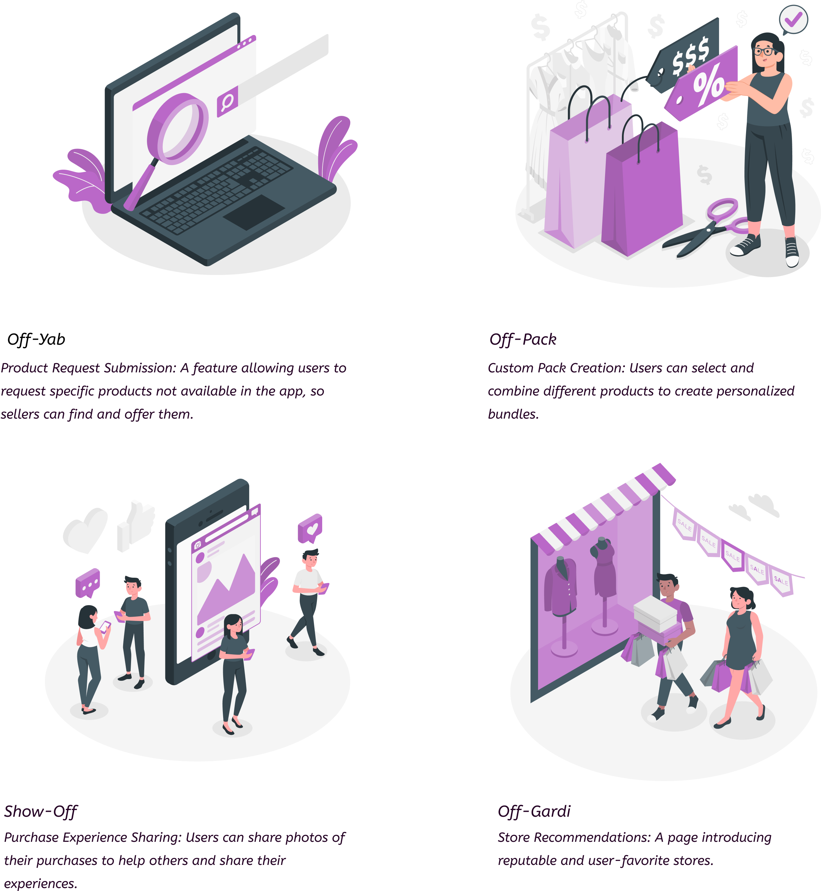
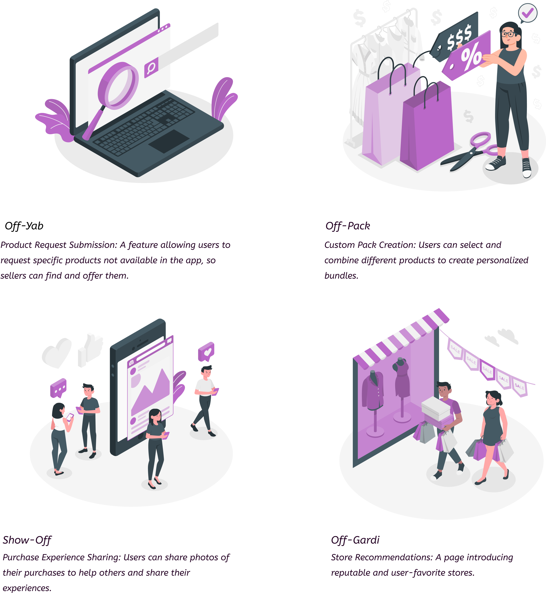

OFF-APP
Designing Online Shopping App (full service) Using Design Thinking Methodology
Project Overview
OFF-APP is a comprehensive online shopping application designed from the ground up using Design Thinking methodology. The project involved creating a complete user experience with 150+ pages, featuring both Light & Dark Mode capabilities.
Design Focus
The project centered on three key experience priorities:
- Simplifying the shopping journey
- Enabling product customization and bundle creation
- Supporting access to rare or unavailable items
My approach followed the Design Thinking framework across discovery, definition, ideation, and prototyping stages.
Research & Insight Development
- Conducted qualitative and quantitative interviews to explore motivations, pain points, and shopping habits with 25 users via Surveymonkey and in person interviews
- Created personas to represent distinct user needs and expectations
- Performed competitor benchmarking to evaluate existing Iranian shopping apps and identify opportunity gaps
A: Define phase
Defining product persona and user needs through extensive research and stakeholder interviews.
Benchmarking with other competitors and analyzing market trends.

Key findings emphasized the importance of ease of use, customization, and meaningful engagement features.
B: Ideate phase
Brainstorming sessions to generate innovative solutions and design concepts.
 

Defining user flows and product requests
C: Prototyping phase
Creating low fidelity then high fidelity interactive prototypes to test and refine design concepts.
Designing color palette and typography and component library
D: Building phase
Deploying the final product and ensuring all components are integrated correctly working and launching MVP with Developers help.
E: Analysis phase
team design Sprints in 3 round and tested some hypothesis and app features in 3 months in agile rhythm after delivering to stakeholder

Usability testing with usertesting platform and GA4 Google Analytics users showed aftre testing with 20-25 users in each sprint:
- Successful use of the custom pack feature for personalized shopping
- High interest in product request functionality for unavailable items
- Positive engagement with browsing and navigation experiences


These insights confirmed alignment between design decisions and user expectations.
Reflection & Opportunities
The project strengthened my experience in:
- Research-driven UX decision-making
- Complex interface structuring and scalable component design
- Designing personalization-oriented product experiences
Future opportunities include expanding social sharing, product discovery, and loyalty-based engagement features.